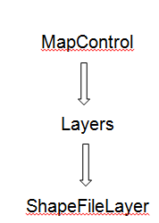
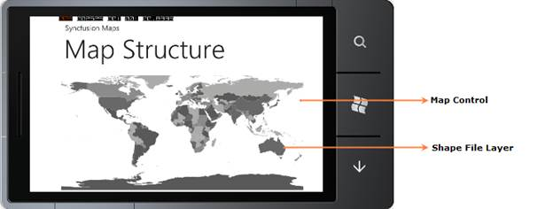

Essential Map Control contains the following structures:

Figure 9: Maps Control Structure

Figure 10: Essential Maps Control’s Structure
Map Control:
MapControl is the base class, which consists of several layers namely the ShapeFileLayer that loads the shape. It receives user inputs and translates them into actions and commands on other layers.
ShapeFileLayers:
The ShapeFileLayer is the most important component of MapControl. It provides a mechanism to upload the shape files, which essentially form the content of the Maps. A shapefile is a digital vector storage format for storing geometric location and associated attribute information. Shapefiles spatially describe geometries such as points, polylines, and polygons.